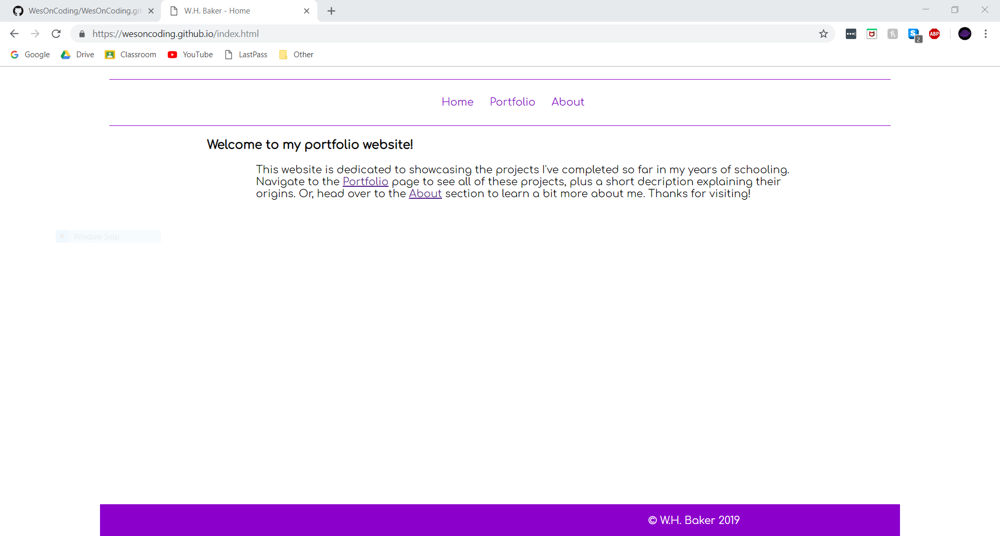

This first project was from my Introduction to Programming class, and the task we were given at the most basic level was to build a game. We had to build the game from scratch using YoYo Games' GameMaker Studio 1.4 engine, using the skills we had acquired from lessons in the class. All assets were made from scratch too, so coding was only half of the project.
Next is a collection of projects I completed for my Women in U.S. History class during my junior year. The assigned project was to come up with a creative way to present information relevant to the unit we were in and the topics we were learning about. Each time we did this style of project I chose to make a Chrome extension, and it ended up being a good choice, seeing as I already had some experience with HTML and CSS at the time.
Finally is a completely unrelated project I completed recently for my IB Computer Science class. For this assignment, we were tasked with creating a portfolio website that displayed some of the projects we had completed in the past. I used GitHub to house my code and from there built the website based on the lessons from class, previous knowledge from online classes, and online references.